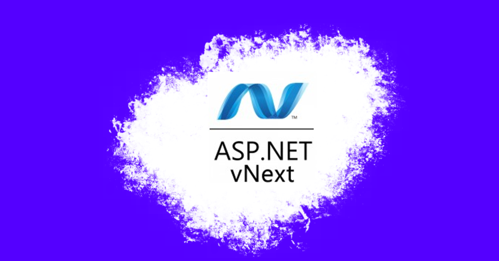
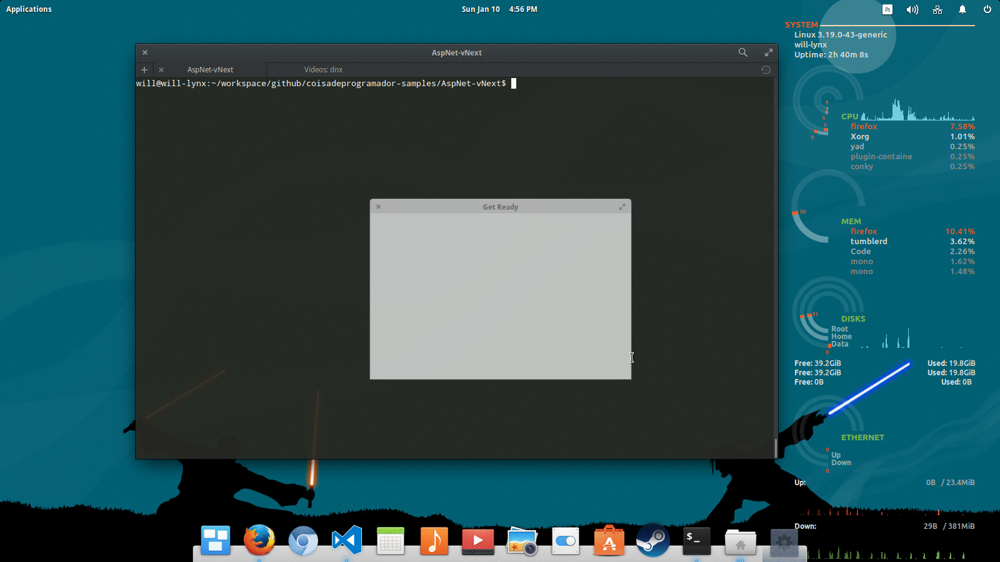
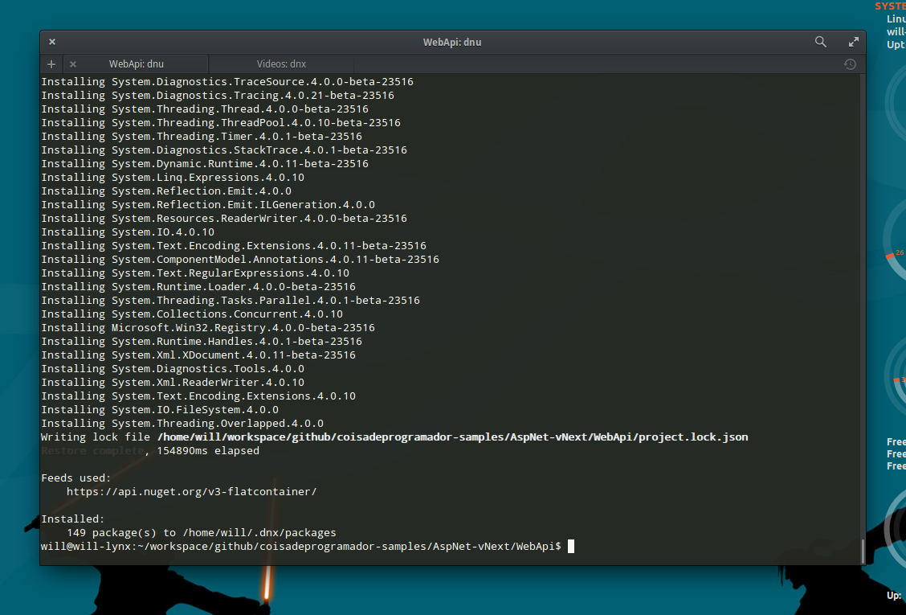
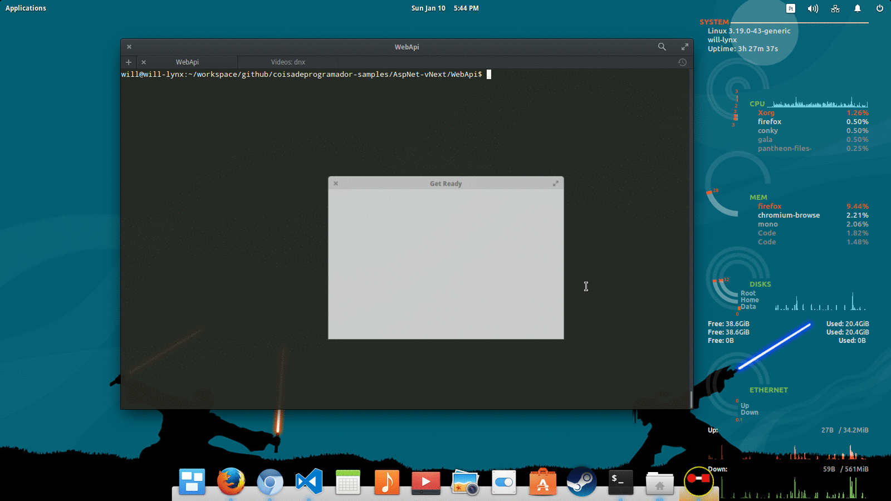
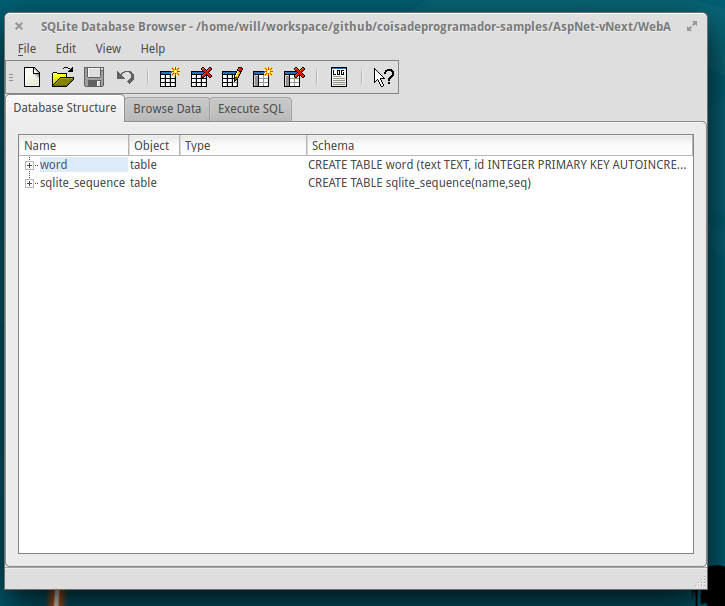
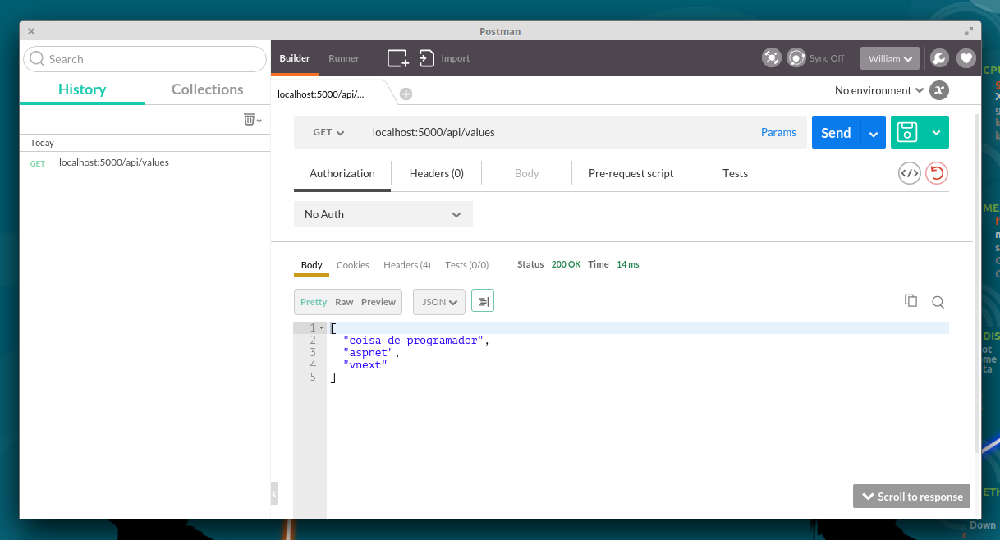
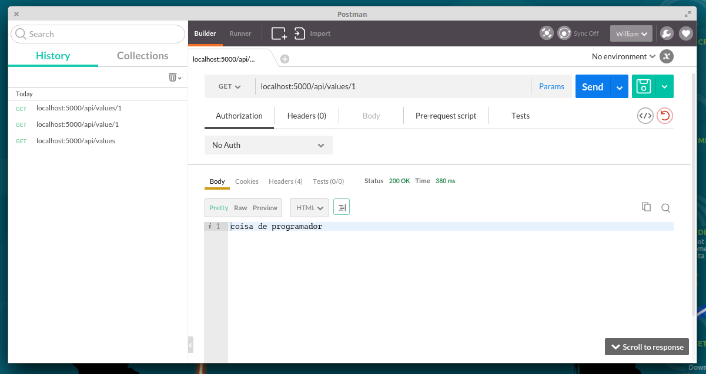
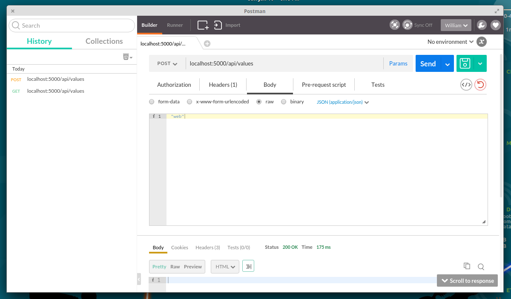
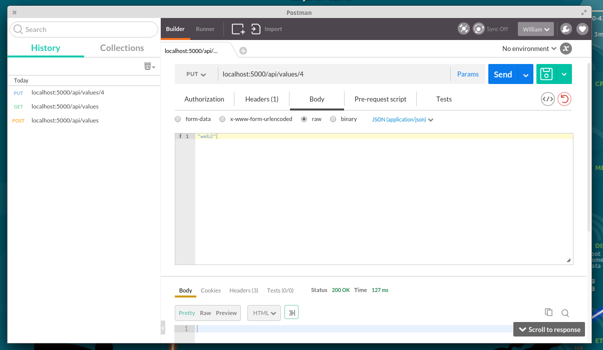
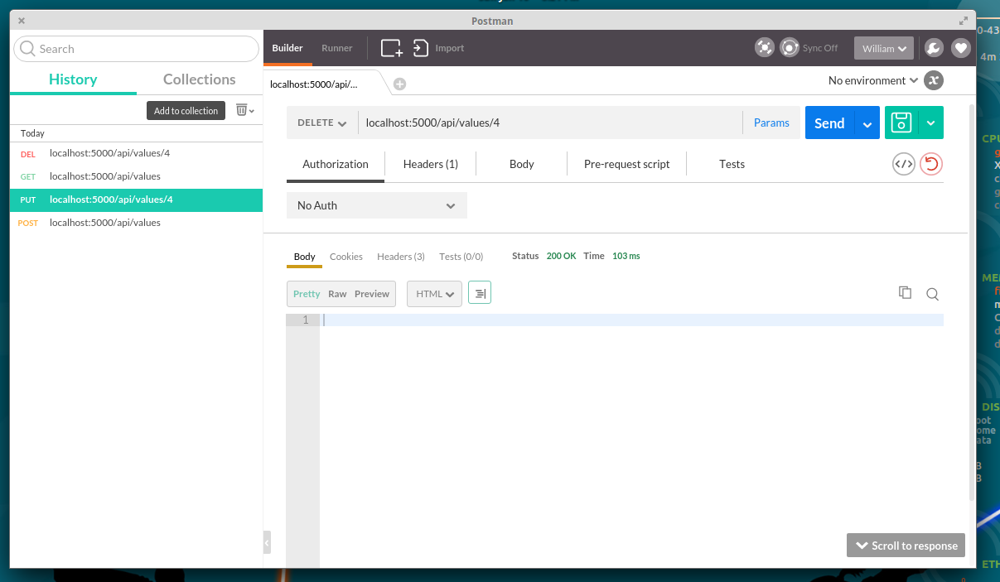

O mundo vNext
O ano de 2015 foi marcado com grandes mudanças na plataforma .NET que se tornou oficialmente Cross-Platform, digo oficialmente pois desde 2004 apesar do framework Mono não ser da Microsoft, tem realizado um trabalho para manter o .NET Cross-Platform, muitos projetos utilizam o Mono, desde o Xamarin que possibilita a criação de aplicações Mobile (Android e IOS) ao Unity 3D uma grande plataforma de desenvolvimento de jogos que também utiliza o framework para possibilitar a entrega em diversas plataformas.
Pré-requisitos
Este projeto será criado em Linux numa distribuição (Ubuntu/Debian) e claro por ser Cross-Platform poderá ser portada para o Windows e OSX, a execução do projeto é controlada pelo DNVM (.NET Version Manager).
Recomendo a leitura do primeiro artigo relacionado ao vNext
Será necessário a instalação do Yeoman, pois serão utilizados scaffolding para facilitar nosso trabalho de configuração da estrutura do projeto, segue outro artigo de introdução.
Vamos começar ?
Primeiramente instale o gerador de scaffolding OminiSharp de maneira global, inserindo o comando abaixo em sua linha de comando.
sudo npm install -g generator-aspnet
Ok, com o template instalado vamos iniciar a criação do projeto com o comando.
yo aspnet
Selecione a opção Web API Application.

Restore nos pacotes
O projeto foi criado porém será necessário realizar uma restauração nos pacotes do .NET Web Api, digite o comando abaixo para realizar esta operação.
dnu restore
Agora é hora de tomar aquele cafezinho e esperar o download dos pacotes.
Pronto neste caso foram instalados 129 pacotes.

Rodando a aplicação base
Com a estrutura do projeto já definida e os pacotes restaurados, vamos testar a aplicação base conhecida por nós desenvolvedores .NET que retorna uma lista de valores, digite em sua linha de comando.
dnx web

Okay, aplicação base rodando vamos implementar o Controller ValuesController, que aplicará o conceito de programação assíncrona.
Implementando o ValuesController
Para deixar o conteúdo do ValuesController persistente iremos utilizar o SQlite, criei uma estrutura de base de dados para o projeto:
CREATE TABLE word (text TEXT, id INTEGER PRIMARY KEY AUTOINCREMENT)

Será necessário instalar o SQlite e adicionar a referência ao projeto.
sudo apt-get install sqlite3 libsqlite3-dev
dnu install Microsoft.Data.Sqlite
Para maiores informações veja o projeto Microsoft.Data.Sqlite no GitHub.
Após a instalação a referência será adicionada ao project.json.
{
"dependencies": {
"Microsoft.Data.Sqlite": "1.0.0-rc1-final"
}
}
O arquivo ApplicationContext foi criado de maneira simples apenas para exemplificar e criar uma conexão com o SQLite, porém é possível criar outros projetos e realizar a separação de interesses!
using System;
using System.Data;
using Microsoft.Data.Sqlite;
public static class ApplicationContext
{
public static SqliteConnection Connection { get; private set; }
public static void Initialize()
{
Connection = new SqliteConnection("Data Source=database.sqlite");
Connection.Open();
}
}
Veja como ficou a implementação do controller.
using System;
using System.Collections.Generic;
using System.Linq;
using System.Threading.Tasks;
using Microsoft.AspNet.Mvc;
using Microsoft.Data.Sqlite;
namespace WebApi.Controllers
{
[Route("api/[controller]")]
public class ValuesController : Controller
{
// GET: api/values
[HttpGet]
public async Task<IEnumerable<string>> Get()
{
var command = new SqliteCommand("SELECT text from word", ApplicationContext.Connection);
var reader = command.ExecuteReader();
var data = new List<string>();
while (await reader.ReadAsync())
{
data.Add(reader.GetString(0));
}
return data;
}
// GET api/values/5
[HttpGet("{id}")]
public async Task<string> Get(int id)
{
string text = null;
var command = new SqliteCommand("SELECT text from word where id=@id", ApplicationContext.Connection);
command.Parameters.AddWithValue("@id", id);
var reader = command.ExecuteReader();
while (await reader.ReadAsync())
{
text = reader.GetString(0);
}
return text;
}
// POST api/values
[HttpPost]
public async Task Post([FromBody]string value)
{
using (var transaction = ApplicationContext.Connection.BeginTransaction())
{
var command = new SqliteCommand("INSERT INTO word (text) values (@text)", ApplicationContext.Connection, transaction);
command.Parameters.AddWithValue("@text", value);
await command.ExecuteNonQueryAsync();
transaction.Commit();
}
}
// PUT api/values/5
[HttpPut("{id}")]
public async Task Put(int id, [FromBody]string value)
{
using (var transaction = ApplicationContext.Connection.BeginTransaction())
{
var command = new SqliteCommand("UPDATE word set text= @text where id = @id", ApplicationContext.Connection, transaction);
command.Parameters.AddWithValue("@id", id);
command.Parameters.AddWithValue("@text", value);
await command.ExecuteNonQueryAsync();
transaction.Commit();
}
}
// DELETE api/values/5
[HttpDelete("{id}")]
public async Task Delete(int id)
{
using (var transaction = ApplicationContext.Connection.BeginTransaction())
{
var command = new SqliteCommand("DELETE FROM word where id = @id", ApplicationContext.Connection, transaction);
command.Parameters.AddWithValue("@id", id);
await command.ExecuteNonQueryAsync();
transaction.Commit();
}
}
}
}
Será necessário inicializar o ApplicationContext altere o Startup.cs.
public void Configure(IApplicationBuilder app, IHostingEnvironment env, ILoggerFactory loggerFactory)
{
loggerFactory.AddConsole(Configuration.GetSection("Logging"));
loggerFactory.AddDebug();
//... altere aqui
InitializeApplication();
}
Precisaremos simular todos os verbos da aplicação REST (GET, POST, PUT, DELETE) por isso recomendo a utilização da extensão Postman do Chrome.
Veja o consumo da aplicação.
- GET (/api/values)
Requisição: http://localhost:5000/api/values

- GET (/api/values/1)
Requisição: http://localhost:5000/api/values/1

POST (/api/values)
Requisição: http://localhost:5000/api/values

PUT (/api/values)
Requisição: http://localhost:5000/api/values/4

DELETE (/api/values)
Requisição: http://localhost:5000/api/values/1

GitHub
Veja o código completo no GitHub
Fim
Quem diria o .NET roda mesmo no Linux. Aos poucos estamos ganhando mais e mais injeção de Cross-Platform no mundo .NET, algumas portabilidades de bibliotecas estão ocorrendo, como vimos o SQLite já esta nesta lista!
E isso e tudo pessoal!